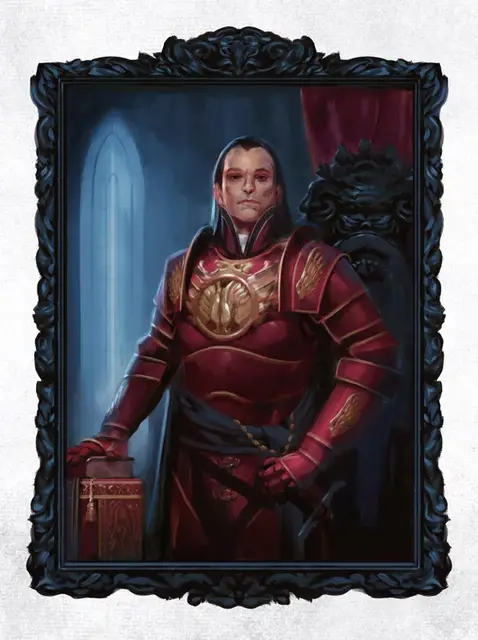

Портрет - страж
Guardian Portrait
Средний Конструкт, без мировоззрения

Класс Доспеха 5 (природный доспех)
Хиты 22 (5к8)
Скорость 0 футов
| мод | спас | ||
|---|---|---|---|
| СИЛ | 1 | −5 | −5 |
| ЛОВ | 1 | −5 | −5 |
| ТЕЛ | 10 | +0 | +0 |
| мод | спас | ||
|---|---|---|---|
| ИНТ | 14 | +2 | +2 |
| МДР | 10 | +0 | +0 |
| ХАР | 10 | +0 | +0 |
Иммунитет к урону яд
Иммунитет к состояниям окаменение, опутанность, отравление, сбивание с ног, захват, паралич, очарование, испуг, истощение
Чувства тёмное зрение 60 футов, пассивное Восприятие 10
Языки Общий
Опасность 1 (200 опыта)
Бонус мастерства +2
Особенности
Восприимчивость к антимагии. Портрет становится выведенным из строя, пока находится в поле антимагии. Если он станет целью рассеивания магии [dispel magic], портрет должен будет совершить спасбросок Телосложения со сложностью, равной сложности спасброска от заклинаний наложившего рассеивание и, при провале, потерять сознание на 1 минуту.
Врождённое колдовство. Портрет обладает врождённой способностью накладывать заклинания, базовой характеристикой является Интеллект (Сл спасброска от заклинаний 12). Портрет может накладывать следующие заклинания, без необходимости материальных компонентов:
• 3/день каждое: контрзаклинание, корона безумия, гипнотический узор, телекинез.
Обманчивая внешность. Пока фигура на портрете не двигается, его невозможно отличить от обычной картины.
Описание
Портрет-страж выглядит как тонко написанная и прекрасная картина, обычно изображающая кого-то важного в весьма реалистичной манере. Картина и её рама связаны сильным волшебством и не могут быть разделены.
Живое изображение. Глаза фигуры, изображённой на картине, снабжены темным видением и кажется, что они следят за существами, которые находятся перед ними.
Собственные заклинания. Когда портрет-страж атакует, фигура на картине оживает и двигается так, будто она живая (хотя и остаётся плоской). Портрет-страж не обладает эффективными рукопашными атаками, но имеет некоторым набором собственных заклинаний, которые он может творить. Когда он творит заклинание, фигура, изображённая на полотне, выполняет соматические жесты и произносит вербальные инкантации, соответствующие творимому заклинанию.